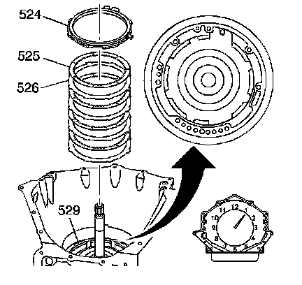
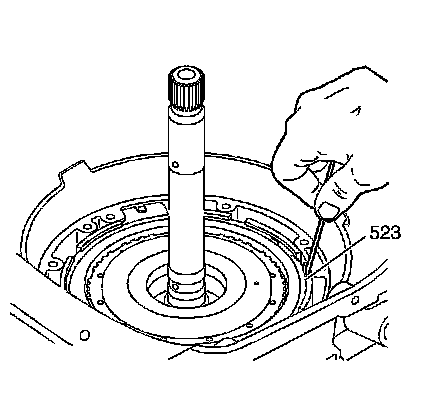

Fourth Clutch Plate Installation
Fourth Clutch Plate Installation

Important: Alternate the fourth clutch plates (525, 526), starting with a steel clutch plate (526) (4 steel, 4 composite). Install the fourth clutch steel plates (526) with the V notch tang at the 1 o'clock position in the fourth clutch housing.
1. Install the fourth clutch plates (525, 526) into the fourth clutch housing (529).
2. Install the fourth clutch backing plate (524). Align the notched tab of the fourth clutch backing plate (524) over the anchor pin in the case.

3. Install the fourth clutch backing plate retainer ring (523).